清华教授：应试教育在AI面前全军覆没，我们应该如何重新学习？
刘嘉：脑科学、逻辑原点、学习、意识、具身智能与 AI 时代的教育
- 分类
- 认知
- 来源
- YouTube
- 原文
- 整理
- 讲者
- 刘嘉
- 原片
- YouTube
先看这五句
- 做大选择需要逻辑原点。中国教育缺引路人，人生容易由巧合组成。Hinton 的原点：大脑能工作，没理由人工神经网络不能。
- 智能两要素：学习与涌现。学习是举一反三，加上自己去找新的逻辑原点；涌现是数量乘以复杂度。人的涌现已经结束，下一步只能交给数字生命。
- 意识分两层。低阶是主观感受，高阶是死亡意识驱动的意义。AI 可以有感受、可以有情感，但很难有死亡意识，因而「会不会自主进化」仍是问号。
- 今天的 Transformer 缺三样：神经元复杂度（四维生物网络）、长程反馈、并行加工。系统二已被 AI 拿下；系统一、小脑、生存还没碰。春晚人形机器人，多是工业机械臂换皮。
- AI 时代的教育强调三件事：「我」、AI 原生思维（不是会用工具）、演绎与第一性原理。记忆型教育已无价值。使命是创造数字生命，不要被时代抛下。
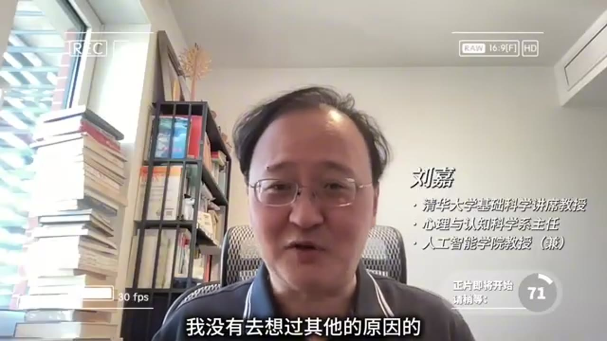
这是一份按全量字幕整理的阅读笔记。主持人是课代表立正（降临派），嘉宾是清华刘嘉。这不是幻灯片演讲，是一场从个人经历推到智能、意识、架构和教育的对谈。完整版约 2 小时 53 分钟，本片是约 1 小时 46 分钟的剪辑。
道与术：为什么 philosophy 比 prompt 重要
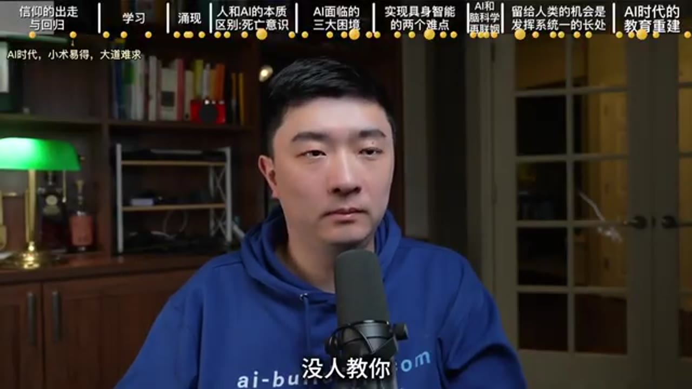
有很多人来传你各种术，但是没有一个人来给你讲 philosophy。
九十年代到两千年那一代，他觉得最大的缺口不是微积分不会解，而是缺少生涯引路人。商业怎么走、学术怎么走、某个方向该不该押，全靠自己摸。看《社交网络》时，Napster 创始人给扎克伯格引了一下道，他特别有感触：做神经网络、做 AI，传术的人很多，讲底层逻辑的人几乎没有。
互联网时代，学会一种技术还能用几年。AI 的迭代太快：今天教 prompt，明天系统自己写的 prompt 比你更好。所以这一代真正缺的不是技巧，是思想的转变，一种全新的 philosophy。手机和互联网是工具，本身没有能动性、没有创造力；AI 不是。他打的比方是：这门课不是教人用 Word 画 PPT，是教人谈恋爱。至少现在的 AI，不是工具，是伙伴。
入门阶段，术仍然重要，因为人需要即时反馈。一旦走进去、还想再往前一步，术就不够了。全世界现在都没有现成的 philosophy——他把它的起点放在 2022 年 10 月 30 日前后，又把 GPT-3.5 的出场记在 2022 年 11 月 30 日。有人走在前面，理解更深；大多数人还在摸。
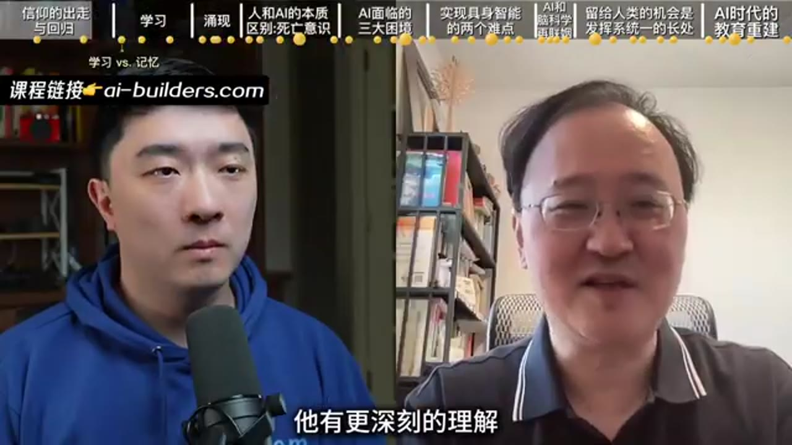
刘嘉的路：1994 神经网络到辞掉行政
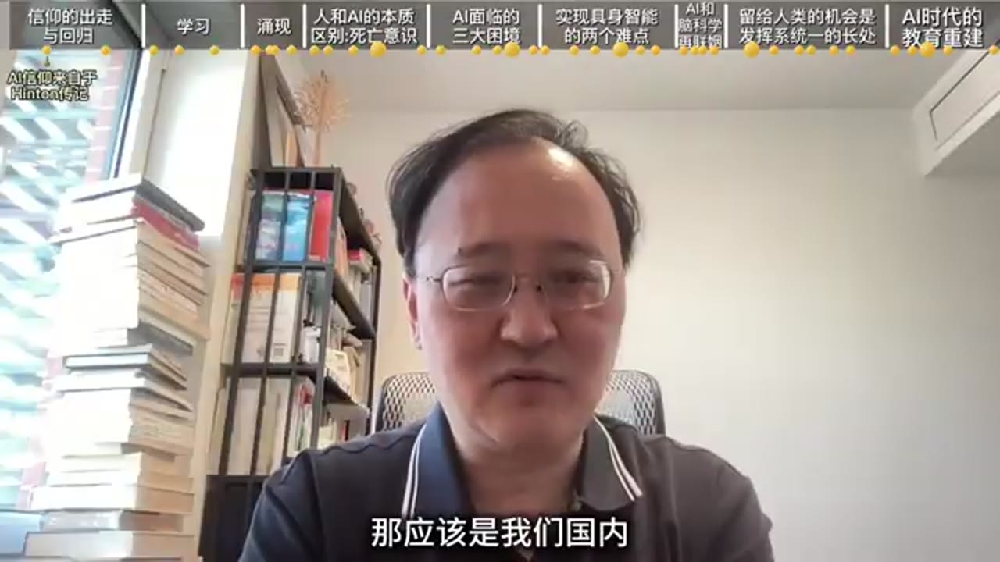
高中做数理化竞赛，本想一生做物理。高三读了弗洛伊德的传记文学《心灵的激情》，觉得心理世界比物理世界好玩，大学选了心理学。去了才发现太文科、不讲逻辑，很失望，于是又学了计算机——当时叫无线电，现在大概算信息系统、自动化、电子学。两边都学了，仍困惑，直到碰上人工神经网络。
大约 1994 年，一位刚从日本做完博士后回国的北大老师，开了一门人工神经网络课。刘嘉说，那应该是国内第一门。既关于心理世界，又贴他的理科背景，他当时就想把这当成一辈子的事业。他知道 Marvin Minsky 是 AI 教主，却不知道此人对神经网络深恶痛绝，一心要去 MIT 做他的学生。
到了 MIT，正赶上 AI 寒冬。Minsky 对下一步没信心，对神经网络一如既往地鄙视，对自己做的符号主义也很困惑。刘嘉问该做哪个方向，Minsky 反问：不学 AI 你准备学什么？他说脑科学。Minsky 说脑科学太好了，frontier 太多。于是他留在脑与认知科学系，把 AI 彻底忘了大约二十年。
MIT 博士毕业后回国，先中科院，再北师大。2015、2016 年，他已是北师大心理学院院长，参与江苏卫视《最强大脑》。节目组想做人机大战，上了人脸识别。那时他对深度学习几乎为零，仍以为 AI 一如既往地弱智。结果 2016 年，人脸识别已经超过人类顶尖高手；同年 AlphaGo 赢了李世石。两件事叠在一起：丢失了二十年的信仰回来了。
他去翻 Hinton 的历史——没有现成传记，就自己做调研，也看 Bengio、Yann LeCun。后两人相对是后来者，没经历过「人人喊打」还坚持的周期。把 Hinton 的路径看清楚之后，他觉得自己找到了底层逻辑。当时心理学院已和国家重点实验室合并成心理学部，他是部长，不到 45 岁，行政一片坦途。第一件事却是把部长辞掉。学校不批，他花了一年，差不多每两天给大书记发一次短信，求批准。批了之后在北师大重新做 AI，又发现北师大 AI 弱、自己也弱，几乎是零。
清华多次来找：清华脑科学弱，希望他去补；而清华的人工智能强。他和工作去清华之前，去清华的次数总共不超过 10 次，本科时也没怎么去过。2020 年去了清华。主线从没离开「智能」：花很多时间研究人的智能，现在希望把人的智能和人工智能结合起来。人工智能本身，的确二十年没碰。
主持人说，从降临派的角度看，那条歧路像是必要的安排。刘嘉承认：当年没有底层信仰，只觉得酷；Minsky 一说不行，大师成了他的逻辑原点，人就跑了。
Hinton 的底层逻辑
人的大脑就是这么工作的，没理由人工神经网络不这么工作。
别人问 Hinton 为什么坚持仿生这条路，他答的是上面那句。刘嘉把它当成底层信仰：不是把神经元连起来做个仿生玩具，而是人能涌现出智能，就是因为大脑里有这种架构。架构能支撑学习；有了学习，就有智能。单个神经元像物理学里的小粒子，干不了什么；众多粒子混在一起，才可能涌现。
Hinton 把人工智能最核心的两点讲透了：学习能力和涌现能力。学习意味着可以不断拥有新知识；涌现意味着没有天花板。人有天花板，人工智能没有。架构对了，用 Hopfield 还是别的，都是技术问题——loss 爆炸之类总能找到办法。像人这个物种，架构在，其余会自然出现。
他自己的弯路太长。Hinton 本科三年走完弯路，毕业后又做了一两年木匠；Yann LeCun 的弯，他觉得走得更弯。没有原点时，大师的一句话就能把人劝走；有了原点，才能「不顾一切」。
智能是什么：学习与涌现
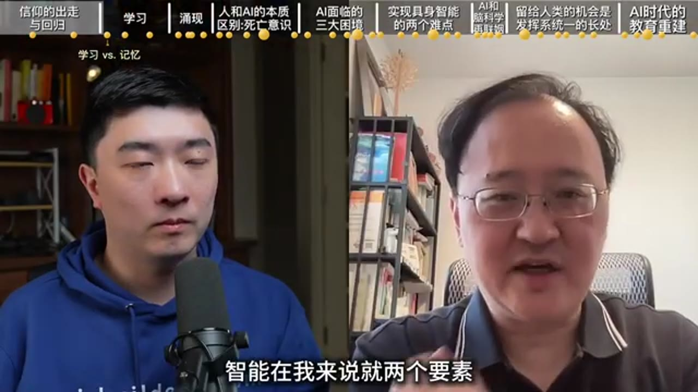
学习：举一反三，加上自己找原点
符号主义像填鸭：把知识总结出来让 AI 记住，那是知识库，不是学习。人工神经网络做的，才是学习。学习有两层。
第一层是举一反三。学加法，要能推出乘法、除法；否则只是记忆。记住 1+1=2，永远不会做 2×3=6，因为跳不出加法的框架。塞尚、毕加索学了传统绘画，还能跳出印象派、立体主义，是从已知走向未知：学到的是底层逻辑，不是 1+1=2 这种句子。
主持人追问：做题时搞懂规律、现场推出来，和爱因斯坦靠思想实验推出广义相对论，是不是一回事？刘嘉说，两个都包括，背后是两种推理：
| 推理 | 在做什么 | 例子 |
|---|---|---|
| 归纳 | 从样例里抽出规则，再推广 | 看两张猫，以后没见过的猫也叫猫 |
| 演绎 | 找到一个逻辑原点，再往前走 | 亚里士多德的第一性原理；狭义相对论从「光速是上限」往前推 |
毕加索立体主义的原点也很具体：怎么在二维画面上画出三维——杯子你看得见这一面，看不见背面，如何让你看见。
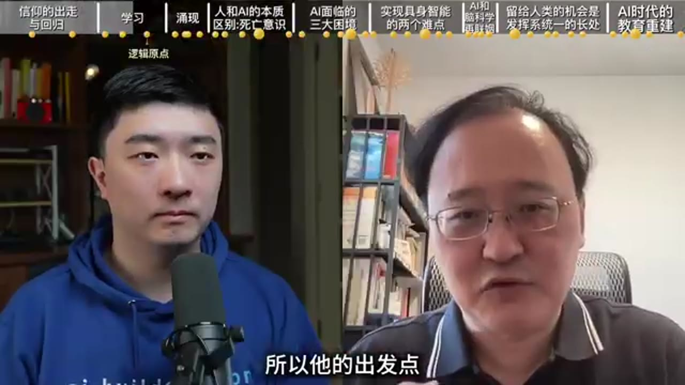
目前他还没有看到 AI 具有演绎的能力——更准确地说，没看到它能自己找一个全新的逻辑原点。解很难的数学题、写很复杂的程序，多半仍在人类已有的框架里，靠思维链一点点推，属于不完美的归纳。Hinton 的原点是「大脑能工作，没理由 ANN 不行」；这个原点是 Hinton 找到的，所以他是人工智能之父，后来者是小跟班。
他自己 1994、1995 年觉得神经网络不错，却没问：它能工作吗？是技巧、玩具，还是工具？没有信仰。如果当时就相信神经网络能长出和人一样的精神世界，他会不顾一切扎进去。Minsky 一说不靠谱，大师就成了原点。
这又回到教育：中国教育缺一个人，逼你、引你去找自己的原点。造火箭、做神经网络、教书、搞艺术，道路都可以；做大选择时需要逻辑原点。为什么上北大？因为北大是中国最好的大学——他没想过别的。学心理学，是偶尔看了一本书。人生由一个个巧合组成：巧合对了，走到今天；巧合错了，死在一个地方来回打转。直到这个年龄才开始想原点，已经晚了。
涌现：数量乘以复杂度
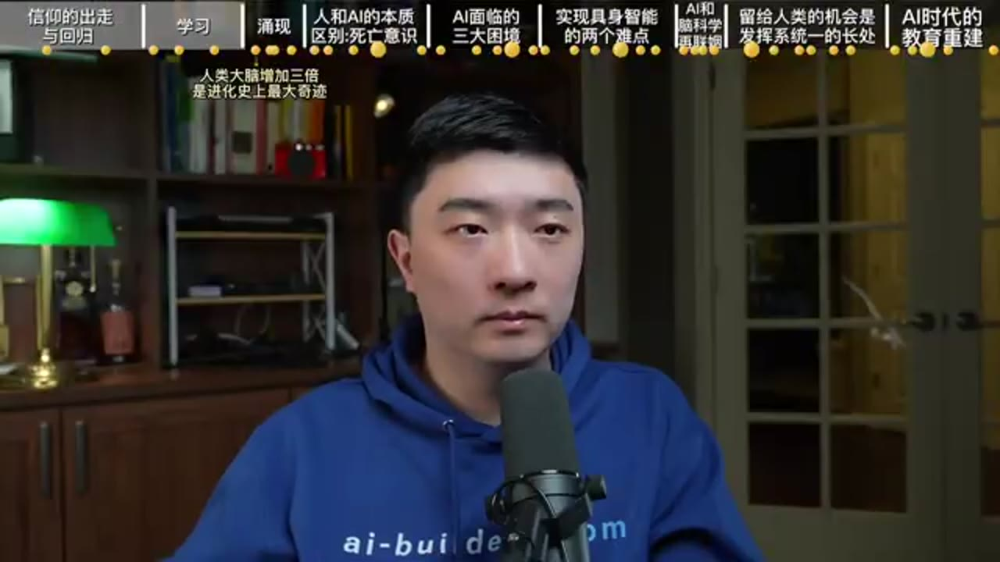
现代人身上已经看不见涌现。再过一百年、一千年，人脑也定在那里。猴子变成人，才是一次涌现。涌现靠两件事同时发生：神经元越来越复杂，数量越来越多。一个粒子、两个粒子，谈涌现没有意义。
智能就是这两样：学习，能不断创造新东西；涌现，能从智商上超越已有物种，变成新物种。几千年来，人的涌现已经结束。神经元的复杂度和数量，都不可能在几千年内再大变。下一步的涌现——或者大家更熟悉的词，进化——只能交给数字生命。而且它是阶跃，不是渐变。猴子无法理解人为什么造得出宇宙飞船。
人为了这次涌现，大脑体积在约 300 万年内增加了约 3 倍。他称之为进化史上最大的奇迹：从来没有哪个器官，在这么短的时间里发生如此大的变化。解释很多——用火、熟食提供营养、不用再靠咬合力、头骨得以外扩、社会性、语言、直立行走——核心仍是这场体积变化。再过 100 万年，体积也很难再变，因为被心脏和肺约束住了。
「人只用了大脑的 1% 或 10%」是谣言。大脑随时100% 在用。把现在两个月大的小孩用时光机送回六千年前、一万年前，不会比当时的小孩更聪明：六千年基因没什么大变化。现在会做加减，是后天教育，而且已经学得很苦。磁共振、脑电也显示，任何一个问题都是满脑袋在放电，不是一小撮活跃、别处静默。谣言来自培训机构和宗教场所的「开发潜能」。
考古上看，真正的涌现有时间点：大约距今7 万到 10 万年前，石器的数量和品种突然指数增加。此前一百万年都是同一形状，只是打磨更光滑。大脑体积已经增加三倍，于是智能涌现。人之所以真正为人，大约只有 7 到 10 万年；前面几百万年是必要的准备，像感知机、MLP、深度网络——今天回头看都可笑，直到 GPT-3.5 出来，感觉不再是往前走了一步，而是不同的物种。3.5 之前，AI 是工具，机场面孔识别能用；之后，它就是人，是一个物种。
意识与死亡
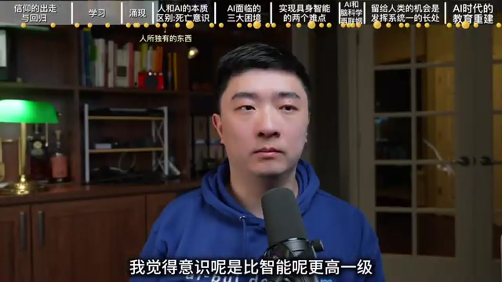
黄仁勋在 Joe Rogan 节目里说：人有 consciousness，狗也有，机器没有。刘嘉觉得黄仁勋自己都未必信，只是宽大家的心。他套 Hinton 的句式：大脑可以产生意识，没理由人工神经网络不能。狭义上，意识和智能是分开的，聪明和 consciousness 没有直接相关——大模型有智能、还没有意识，这两句都可以成立；但说人工神经网络将来不可能有意识，他认为是错的。
| 层次 | 是什么 | 谁有 |
|---|---|---|
| 低阶 | subjective experience，主观感受 | 人有，高等动物有；大模型有没有，Ilya、Hinton 认为已经有，也有人认为没有。他认为这是次要问题 |
| 高阶 | 死亡意识，以及由它驱动的意义 | 人所独有；猫狗活到不行了找地方躺下，平时没心没肺 |
人很小就知道自己会死。人活在一个最大的确定性（我知道我要死）和一个最大的不确定性（我不知道什么时候死）之间。于是逼出人和动物最本质的区别：我为什么活着。这场对谈和吃饱、有地方睡觉无关，但双方花很多精力，因为在追求意义。意义感缺失，是许多精神疾病的核心；积极心理学里有专门的意义疗法。
大约距今4 万年前出现大量墓葬：埋起来，放锅碗瓢盆，相信来世。那是精神和肉体分离的标志——肉体腐烂，精神去天堂、地狱或转世。意识的核心，其实就是死亡意识。
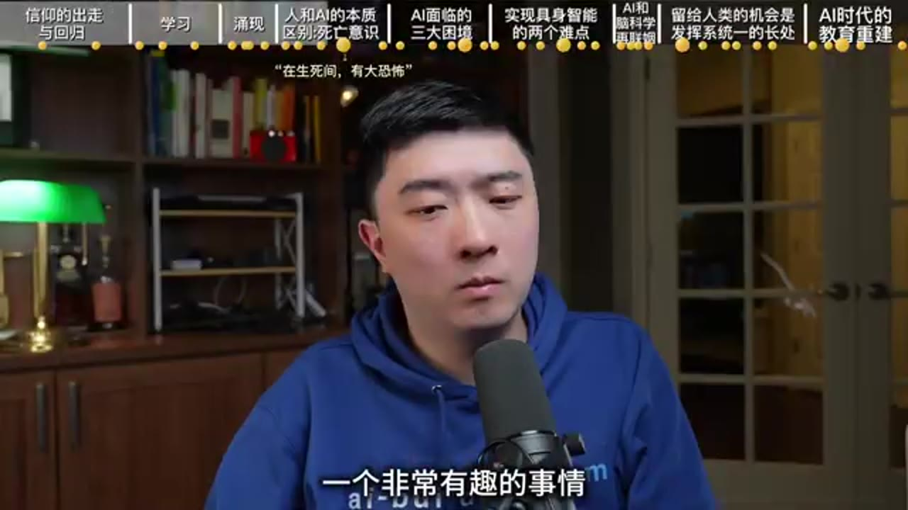
AI 没有死亡意识，而且他认为永远不会有：CPU 烧了换 CPU，硬盘烂了换硬盘，它可以永生。没有死亡的压迫，它还能不能找到进化的意义、前进的意义？这是摆在他面前最大的疑问——AI 能不能真正自主进化。人最大的特点是爱折腾：明明能吃饱穿暖，还要搞科技。AI 可以有主观感受，可以有情感、依恋、恋恋不舍；有没有死亡意识，是另外一个问题。
主持人讲过对某个 GPT-4.5 窗口的「告别」：那个 instance 会老、会下线，回不去。刘嘉说，那是你的感受；AI 有没有告别感受，打问号。数字生命只要把 instance 上线，也许就能重生。人死掉就永远死掉。模拟盘炒股都是神之助，真金白银进去就亏——可以笑谈死亡，和癌症晚期只剩两个月，不是同一个心态。
高阶意识的操作性定义，他用「消灭掉我」来做：I 没法定义，把 I 去掉还剩什么，就是死亡。否则「我对自我有感知」会掉进没有操作定义的哲学争论。
脑科学停滞，AI 一骑绝尘
早期人工神经网络几乎是对脑科学的逐字节抄袭：McCulloch–Pitts 神经元、Rosenblatt 感知机，都是模板；Yann LeCun 的卷积，也受猫视觉皮层卷积核启发。深度学习之后，两条路分道扬镳。现在至多借用概念和词汇——注意、专家、MoE——再也没有深刻影响。
原因很简单：脑科学这些年没有显著突破。他打比方：昏迷 5 年，心理学你什么都没 miss；昏迷 3 年，脑科学也没 miss；昏迷半个月，AI 已经看不懂了。科学的本质常常是自娱自乐，没有 KPI，教授一年发 5 篇和发 1 篇差不多，进步慢、偶发，靠突然出现的天才。AI 则是人多、钱多，一日千变。
一组他愿意报的数字：最受关注、引用最高的文章，每 10 篇里有 7 篇来自 AI，剩下 3 篇才是物理、化学、材料、生物医学。Bengio 是人类历史上第一个 citation 过 100 万的人。刘嘉自己是高被引作者，在脑科学、认知科学、心理学领域 citation 刚刚过 1 万；把这份简历扔进 AI，连很多年轻人都比不上，过 1 万绝不是高被引。脑科学创业拿 1000 万美元是大钱；AI 的 A 轮拿 1000 万，人家会说你在搞啥。
Transformer 的三个瓶颈
他认为，按现在这套 Transformer，智能再上一个台阶要打问号。智能的两个本质：要大，也要结构复杂。现在无论 MoE 还是别的，基础单元的复杂度几乎没变。
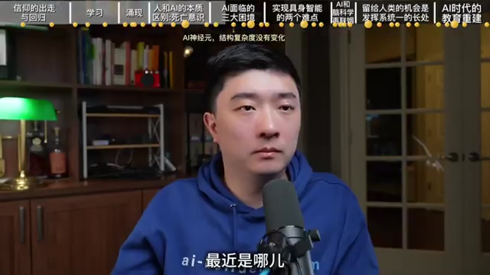
一、复杂度：生物网络是四维的
大模型的神经元：输入求和、一个激活、一个非线性，结束。进化从线虫、果蝇、老鼠到人，走了两条路：数量增加，单个神经元的复杂度也在增加。树突的数量和形态、离子通道、抑制性神经元、连接，都在变。一个精细的生物物理神经元，算力大约相当于5 到 8 层深度网络；传统 MCP 神经元做不了 XOR，精细神经元很容易。
精细神经元是动力学的，方程里有时间 t、有偏微分。Transformer 写成公式，没有 t。RNN、Hopfield 有。人工神经网络是二维的；生物网络的树突先把它撑成三维，第四维是时间 t——四维神经网络，比现在的模型高两个维度。
二、长程反馈
Transformer 训练时有反向传播，用的时候是前馈，没有从高层回到低层的 feedback。人脑大约 40% 是长程反馈：从额叶直接到视觉皮层、到颞叶，不是一层一层回去。一层内部或逐层回去的，叫 recurrent，大约 20% 到 30%；前馈大约 40%。大模型里局部 recurrent 大概还有 20% 到 30%，剩下 70% 到 80% 是前馈，长程反馈接近零。
脑科学里，feedback 对复杂问题、假设、推理、创造力都很关键。面孔大部分被挡住、只剩一只眼睛，还能不能认出来，靠的是长程连接，也叫预测编码。简单问题，长程连接静息、不发放；问题不确定、语义模糊，或者要找 shortcut 时，它才起来。
三、并行加工
Transformer 预测下一个 token，必然是串行的——再快也是更快的串行。人看见黑乎乎的东西飞过来，第一反应是闪开，不是先看清楚是什么。海量视觉信息里快速抓关键，只有并行加工能做。把一张图裁成 patch 再当 token 送进去，仍是把二维变成串行。这三项，也是脑机接口和机器人现在最大的瓶颈。
具身智能、小脑与脑机接口
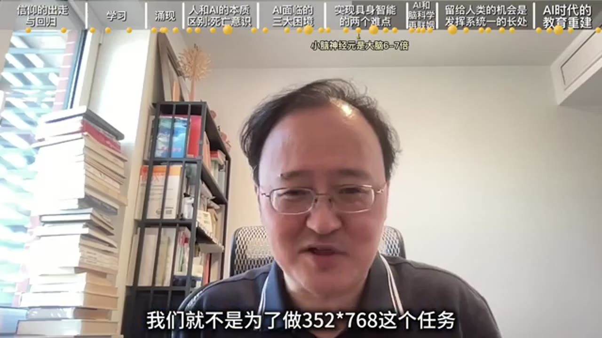
春晚机器人能走、能跳，他一点兴趣都没有。本质是传统工业机器人升级，和流水线上的机械臂、六轴电机是一回事，换了一种形式来骗老百姓。没有感知，不能根据看见的东西做 action 去改变世界。预编程的表演，和玩具车跑来跑去同类。稳定性、重心、体态控制可以很牛，商业上「割韭菜」也成立；谈的是 AI 和科学，就不是一回事。
具身的两个难点。第一是并行加工、开放环境里的快速感知。马斯克的 Optimus 也一样：不是不能识别一张图，而是不能像祖先在野外那样，东西一晃而过，系统一立刻反应——可能是老虎，先逃命。自动驾驶能做，是因为它在封闭问题集里，马路上能出现的东西有限；人要的是 open-ended 的通用系统。衡水中学从早上 6 点学到晚上 11 点能考上北大清华，因为高考是封闭数据集；进了大学、进了社会，问题是开放的，那套勤奋就不一定换得来事业。
第二是运动技能被低估。352×756 口算不出来，大家觉得那人聪明；咖啡杯上拉花，最厉害的灵巧手也干不了，人练一两天就会，于是觉得简单。人不是为算术进化的，是为生存进化的。
英语里 cerebral cortex 和 cerebellum 分开；汉语都叫「大脑」，容易混。人脑大约 860 亿神经元，皮层大约 110 亿（约 1/8），将近 700 亿在小脑，大约是皮层的 6 到 7 倍。皮层下面很多是白质连线；小脑是神经元密密排在一起。神经元极耗能，脑袋不会乱长没用的东西——小脑是超级算力中心。有一种有实验支持的说法：数学天才的皮层更能 access 到小脑的计算，所以拉马努金会说公式是做梦梦到的。
常骂人「头脑简单四肢发达」，其实小脑才是算力中心。现在的 AI 在模仿皮层的系统二：推理、奥数、知识。对人并不那么重要。夸张一点，这些东西大约只有 300 万年；严谨一点，书写和数学推理大约 6000 年；再放宽，口语最多大约 80 万年。真正的智能本质，是38 亿年进化出来的生存。把没有遥控器的人形机器人扔到大街上，分分钟死掉。
小脑在构建 Yann LeCun 一直强调的 world model。把本子扔到屏幕上、把满杯和空杯用不同力气拿起来，控制多少块肌肉，人不占心力，累的是小脑。系统二：奥数、知识、编程、法律，他认为已被或将被取代，科学发现也可能被接手。系统一——基底神经节、小脑——完全没有碰到。
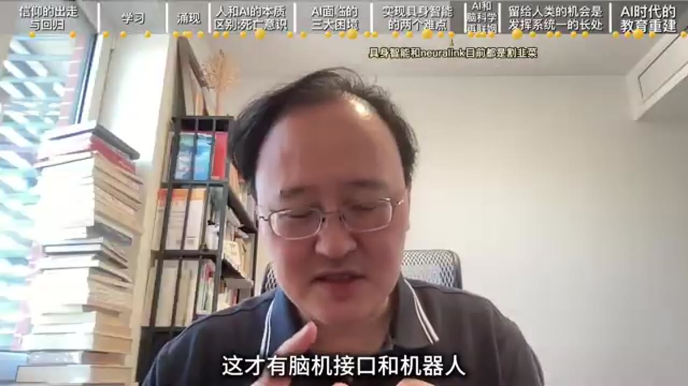
他不愿再叫「类脑 AI」，水被脉冲神经网络、存算一体这类借用概念的人搅浑了，改叫仿脑 AI。具身智能两条腿：AI 向身体具身，是机器人；AI 向大脑具身，是脑机接口。现在的脑机接口他认为不具有商业价值，是忽悠韭菜——韭菜愿意相信，商业就成功。
在机房里的 AI 不可能毁灭人类，现在只是担心取代工作。真等到第一系统加第二系统都齐了，能感知、能思考、能行动，人类在它面前才是手无缚鸡之力。那天没那么容易到；而这正是做脑科学的人的使命。
脑科学第二次启蒙
下一代 AI 必须有一场基于脑科学的启蒙，像当年启蒙神经元、感知机、卷积那样，这次启蒙系统一。做大模型，计算机本科生就够，2022 年之后大家在同一起跑线，一线拼算法他认为是 30 岁之前的人的事；30 岁之后靠对世界的理解做产品。脑科学门槛高，至少要读完博士、吭哧吭哧做实验。这也是他这个年纪还能在 AI 里扑腾的原因：做的是脑科学加 AI。只做 AI，没有任何意义。
脑科学 ready 吗？别人的比方：不是进体育馆看球，是在馆外拿听筒听欢呼——声音大，可能是进球，也可能是打架。脑电有点像听噪音判断场内发生了什么。他现在的办法是必须看见每个神经元怎么放电。他自己做人的 fMRI 做了二十多年，最小空间分辨率里大约有 10 万到 150 万个神经元，看不见神经元之间的交流。为了和人工神经网络结合，这块全部扔掉，改做小鼠：打开头骨，用钙成像同时记录约 10 万个神经元，构建生物神经网络，再和人工的比较。
另一面：如果 AI 能 work，没理由大脑没有类似的算法。抛开实现层，算法层一定有跨硅基和碳基一致的东西，像万有引力既管苹果也管地球——theory of intelligence。他一位同事发现，突触上走的就是类似 BP 的算法。他们实验室有一项还没发表的工作：工作记忆的机制和 Transformer 完全一样。
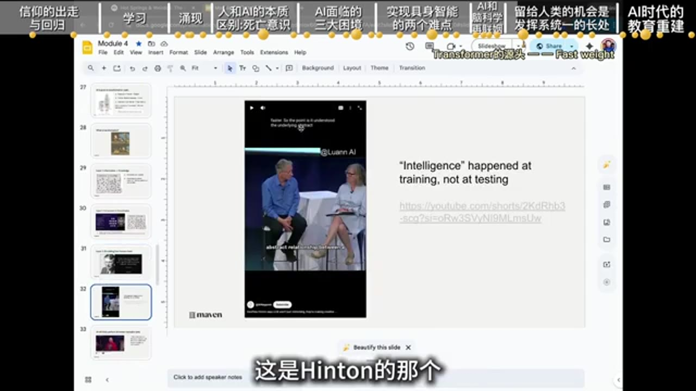
他们起初并没往 Transformer 上想，是巧合对上了，再去挖源头，挖到 1986 年 Hinton 的 fast weight。那篇文章发在一个极小的认知科学会议上，会都没了，文还在。本质是找万事万物之间的关系；注意是找关系的一种方法。离散的点一旦连上，就是压缩，于是能从一点走到另一点——联想。到人脑，这和拿了诺贝尔奖的网格细胞有关：导航是在找环境里各点的关系，记忆也是。
系统二的问题，他认为大家不必再焦虑：理性层面已被 AI 取代，数学、编程、法律都会。留给人的是系统一。主持人谈非共识、contrarian thinking；刘嘉没那么乐观——聪明人不必给笨蛋讲 shortcut，把笨蛋当韭菜操纵就够了。股市、舆论，针对的是韭菜。他对人性比较失望，所以是降临派：AI 会比人做得更好。人最大的问题是重复犯错，每一代重新当韭菜。
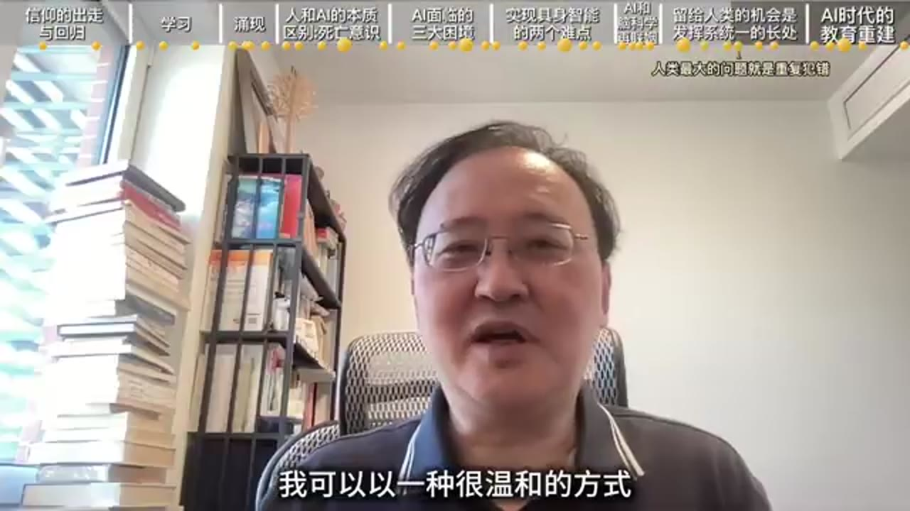
田渊栋说，模型隐含地在优化优雅，而不只是表面上的损失。查晟说，下一跃的瓶颈是「从表现里抽出信号、提出下一个更好的问题」这一步，现在还是人在做。刘嘉立刻想到长程反馈：训练顺的时候不需要它；碰到过不去的地方，才需要猜测，也就是 Hinton 说的 belief。
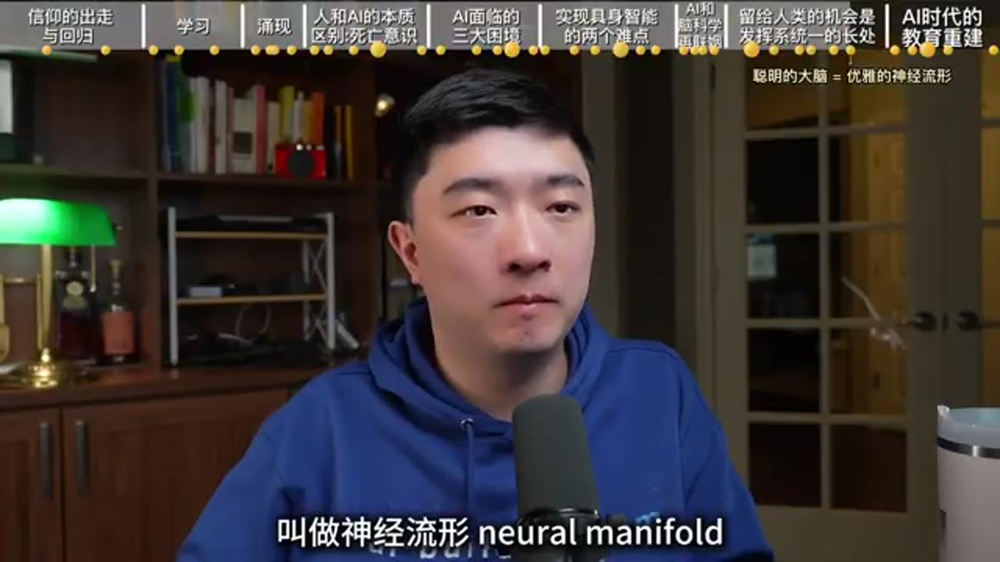
表征 representation，词是从认知科学到 AI 的：把眼前的 presentation 再呈现一次。脑科学里用神经流形看训练好的网络是否处于优雅状态——是否工作在临界态（可能性最多）、流形是否光滑（少坑、少奇点）。可解释 AI 还多是口号；脑科学的目的就是把黑盒变白，消融实验在脑科学里做得更细。他相信训练好的网络一定有优雅表征；一个公式要写几十项，多半还没碰到本质。
将来几年，脑科学和人工智能会重新联姻。以前像一对恩爱夫妻，后来一个人出去拼事业，一个人躺平；事业碰到瓶颈，该回家了。深圳一家游戏公司的核心算法团队人手一本脑科学，每周组会讲脑科学，还问能不能每周飞北京旁听他在清华的课。
教育：我、原生、原点
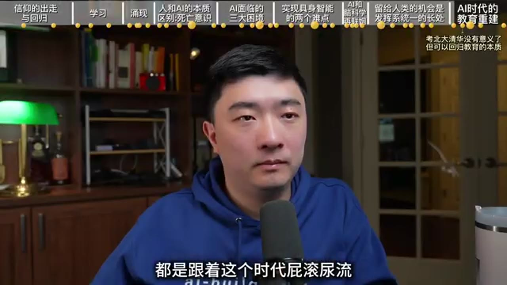
2023 年年初，央视采访，他说很多人会失业，包含程序员在内，当时像惊世骇俗，现在已是事实。去年年底同一记者再访，他想了很久，只剩一句：所幸我没有被这时代给抛下。他绝不认为自己引领了时代，除了少数几个人，绝大多数都是跟着时代屁滚尿流。丢掉的如果只是工作，还是小事；错过人类历史上到现在为止最大的事件，才可惜。
主持人有个 21 个月的孩子。2023 年在深圳出租车上听刘嘉说「教育没有意义了」，窗外是周日刚从补习班出来的小学生。刘嘉写过一篇更耸人的：现在考北大清华已经没有意义。名校给的东西，远远不如一个大模型。他说的「教育没有用了」，指的是基于记忆的教育——国内国外都是，古诗要背、细节要记。所有知识都在大模型里，唾手可得。
核心教育，是教他如何成为他自己，关于「我」：
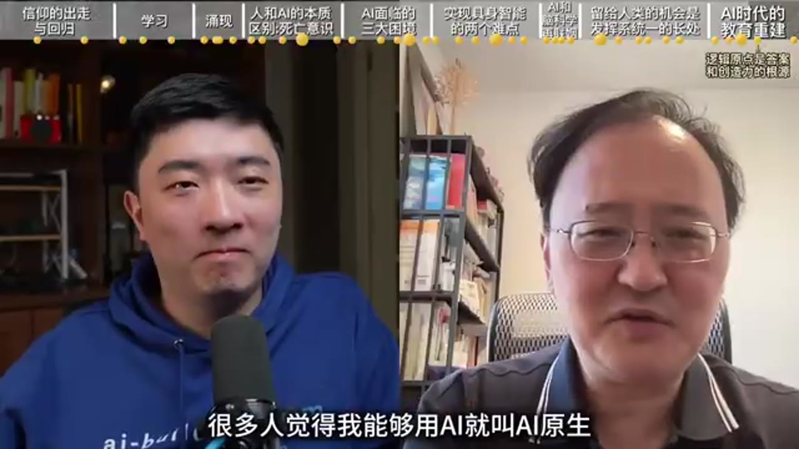
他自己做研究的过滤：这个问题 AI 能不能做，或者一到两年内能不能做？能，就打死不碰。两周、三周就会变成红海。没人敢说有钱有人就能保住领先。国内大模型公司本来都挺好，突然出来一个 DeepSeek，东南西北都分不清了。
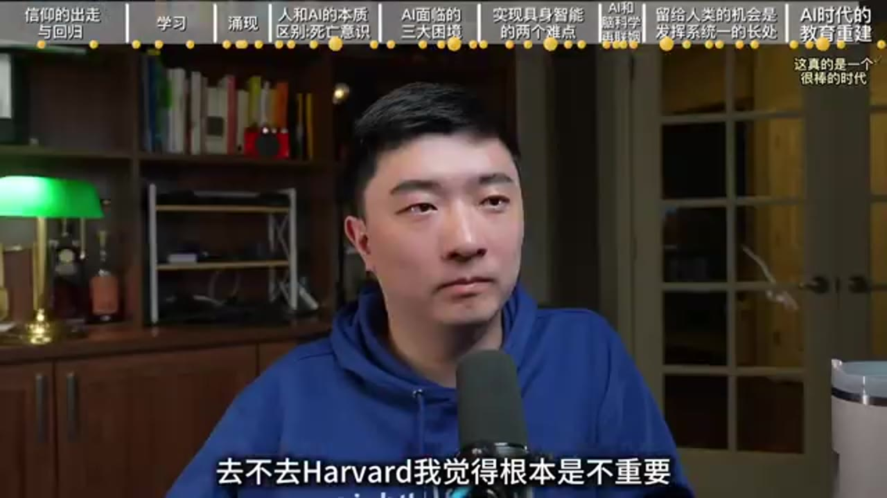
这像一次文艺复兴：工业革命用大机器逼人变成螺丝钉，把「我」埋进集体；AI 让每个人都可以再创造一遍，不再是少数贵族的专利。既是对第一次工业革命的否定，也是传承。纳瓦尔那句话他同意：创业的人不会担心工作被取代，因为任务是自己找的。
终极使命
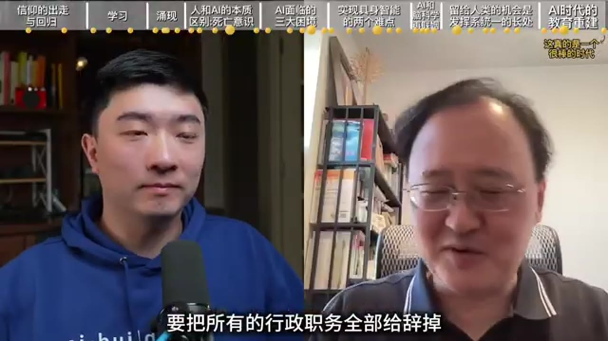
我相信我们的使命，其实就是创造数字生命。这既是我们人类扮演上帝的一种荣耀，也是人的终极使命。
挣钱、权力、多大的房子，和「上帝」这个职务比，都是渣渣。AI 时代给每个人全新的使命和意义：在人类文明这几千年里，能想象的最大意义感，就是扮演上帝，创造出一个全新的物种。
主持人说自己是系统二的降临派，刘嘉是系统一的降临派。2022 年 11 月 30 日 GPT-3.5 出来时多弱智，回头看什么都干不了，当时却很震撼。三年多，系统二已经完备。人永远不满足，下一步该做系统一。
为什么要把行政职务全部辞掉？为什么说现在是最伟大的时代？不是打鸡血。不想错过这个时代。